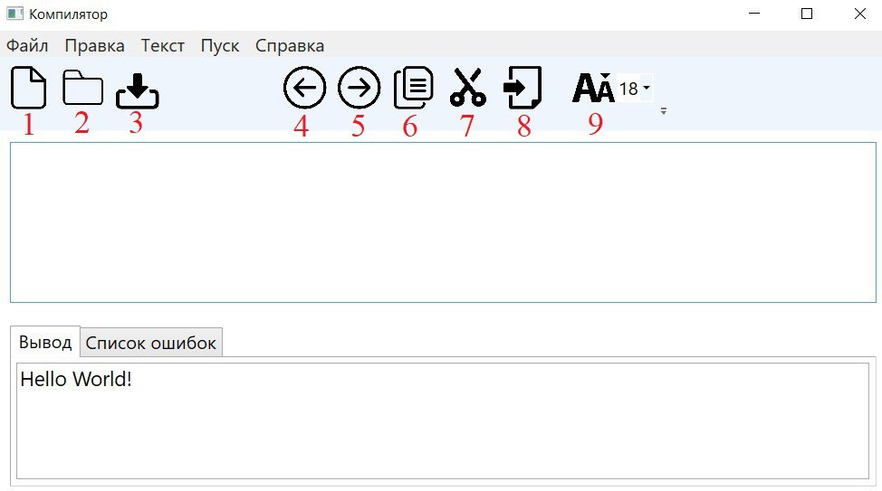

Работа с текстом
Для работы с текстом в программе можно использовать команды:

- Создать: создать новый текстовый документ;
- Открыть: открыть существующий текстовый документ;
- Сохранить: сохранить текущий текстовый документ;
- Отменить: отменить последнее действие;
- Повторить: повторить последнее действие;
- Вырезать: удалить выбранный текст и скопировать его в буфер обмена;
- Копировать: скопировать выбранный текст в буфер обмена;
- Вставить: вставить текст из буфера обмена в выбранное место;
- Размер текста: Изменение размеров текста в окне редактирования и окне вывода результатов.;
О программе:
Разработка пользовательского интерфейса (GUI) для языкового процессора.
Автор: Киреенко Михаил Андреевич, e-mail: mikhail.lol.03@gmail.com 2024 г.